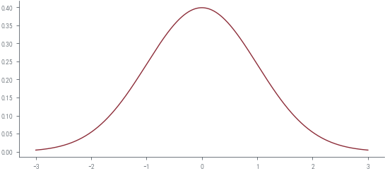
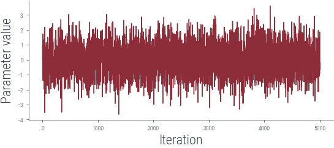
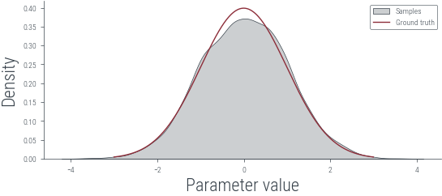
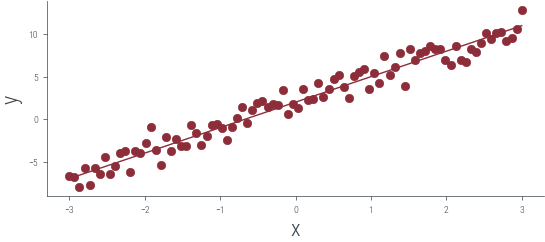

import torch
import torch.autograd.functional as F
import torch.distributions as dist
import numpy as np
import matplotlib.pyplot as plt
plt.rcParams['font.family'] = 'sans-serif'
plt.rcParams['font.sans-serif'] = ['Liberation Sans']
import pandas as pd
%matplotlib inlinefrom tueplots import bundles
plt.rcParams.update(bundles.beamer_moml())
#plt.rcParams.update(bundles.icml2022())
# Also add despine to the bundle using rcParams
plt.rcParams['axes.spines.right'] = False
plt.rcParams['axes.spines.top'] = False
# Increase font size to match Beamer template
plt.rcParams['font.size'] = 16
# Make background transparent
plt.rcParams['figure.facecolor'] = 'none'try:
import hamiltorch
except ImportError:
%pip install git+https://github.com/AdamCobb/hamiltorchhamiltorch.set_random_seed(123)
device = torch.device('cuda' if torch.cuda.is_available() else 'cpu')
devicedevice(type='cpu')gt_distribution = torch.distributions.Normal(0, 1)
# Samples from the ground truth distribution
def sample_gt(n):
return gt_distribution.sample((n,))
samples = sample_gt(1000)x_lin = torch.linspace(-3, 3, 1000)
y_lin = torch.exp(gt_distribution.log_prob(x_lin))
plt.plot(x_lin, y_lin, label='Ground truth')
# Logprob function to be passed to Hamiltorch sampler
def logprob(x):
return gt_distribution.log_prob(x).sum()
# Initial state
x0 = torch.tensor([0.0])
num_samples = 5000
step_size = 0.3
num_steps_per_sample = 5
hamiltorch.set_random_seed(123)params_hmc = hamiltorch.sample(log_prob_func=logprob, params_init=x0,
num_samples=num_samples, step_size=step_size,
num_steps_per_sample=num_steps_per_sample)Sampling (Sampler.HMC; Integrator.IMPLICIT)
Time spent | Time remain.| Progress | Samples | Samples/sec
0d:00:00:16 | 0d:00:00:00 | #################### | 5000/5000 | 308.91
Acceptance Rate 0.99params_hmc = torch.tensor(params_hmc)
# Trace plot
plt.plot(params_hmc, label='Trace')
plt.xlabel('Iteration')
plt.ylabel('Parameter value')Text(0, 0.5, 'Parameter value')
# Logprob function to be passed to Hamiltorch sampler
def logprob(x):
return gt_distribution.log_prob(x).sum()
# Initial state
x0 = torch.tensor([0.0])
num_samples = 5000
step_size = 0.3
num_steps_per_sample = 5
hamiltorch.set_random_seed(123)params_hmc = hamiltorch.sample(log_prob_func=logprob, params_init=x0,
num_samples=num_samples, step_size=step_size,
num_steps_per_sample=num_steps_per_sample)Sampling (Sampler.HMC; Integrator.IMPLICIT)
Time spent | Time remain.| Progress | Samples | Samples/sec
0d:00:00:14 | 0d:00:00:00 | #################### | 5000/5000 | 338.09
Acceptance Rate 0.99params_hmc = torch.tensor(params_hmc)
# Trace plot
plt.plot(params_hmc, label='Trace')
plt.xlabel('Iteration')
plt.ylabel('Parameter value')/tmp/ipykernel_18135/1433682485.py:1: UserWarning: To copy construct from a tensor, it is recommended to use sourceTensor.clone().detach() or sourceTensor.clone().detach().requires_grad_(True), rather than torch.tensor(sourceTensor).
params_hmc = torch.tensor(params_hmc)Text(0, 0.5, 'Parameter value')# KDE plot
import seaborn as sns
plt.figure()
sns.kdeplot(params_hmc.detach().numpy(), label='Samples', shade=True, color='C1')
plt.plot(x_lin, y_lin, label='Ground truth')
plt.xlabel('Parameter value')
plt.ylabel('Density')
plt.legend()/tmp/ipykernel_18135/469715340.py:4: FutureWarning:
`shade` is now deprecated in favor of `fill`; setting `fill=True`.
This will become an error in seaborn v0.14.0; please update your code.
sns.kdeplot(params_hmc.detach().numpy(), label='Samples', shade=True, color='C1')<matplotlib.legend.Legend at 0x7f51dfedd4b0>
# Linear regression for 1 dimensional input using HMC
x_lin = torch.linspace(-3, 3, 90)
theta_0_true = torch.tensor([2.0])
theta_1_true = torch.tensor([3.0])
f = lambda x: theta_0_true + theta_1_true * x
eps = torch.randn_like(x_lin) *1.0
y_lin = f(x_lin) + eps
plt.scatter(x_lin, y_lin, label='Data', color='C0')
plt.plot(x_lin, f(x_lin), label='Ground truth')
plt.xlabel('x')
plt.ylabel('y')Text(0, 0.5, 'y')